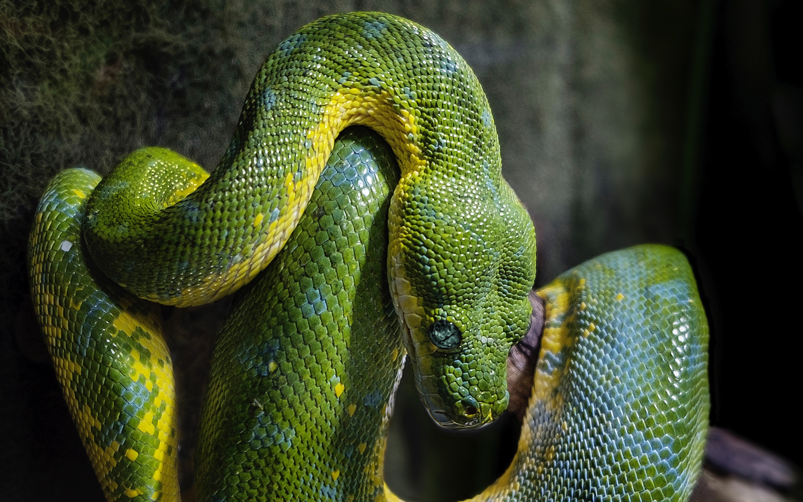

Работа с озображениями на Python в 2017 году
Работа с озображениями на Python в 2017 году
Александр Карпинский, Uploadcare

O себе
Занимаюсь сервисом обработки картинок на лету в Uploadcare
Член команды Pillow
Автор форка Pillow-SIMD
Модификация пользовательского контента
- Разнообразные форматы
- Изменение геометрии
- Наложения
- Размытие, резкость
- Работа с цветом
- Работа с метаданными
Графический редактор
- Все из первой задачи
- Геометрические примитивы
- Нанесение текста
- Высокая точность работы
Обработка данных
- Форматы оговорены или их можно задать
- Различная фильтрация
- Статистика
- Распознавание образов
Pillow
- Форк Python Imaging Library. 1995 год
- Разработка ведется 3-месячными циклами
- Ядро на Си. Нативный модуль для Python
- Версии Python: 2.7, 3.3+, pypy, pypy3
- Есть всё для «модификации пользовательского контента»
- Рисование на зачаточном уровне, нет Безье, режимов смешивания
Сайт: python-pillow.org
OpenCV
- Расшифровывается Open Computer Vision. 2000 год
- Биндинг на Python входит в комплект и очень популярен
- Версии Python: 2.7, 3.4+
- Геометрия, размытие, резкость, работа с цветом
- Рисование на зачаточном уровне, нет Безье, режимов смешивания
- Огромное количество функций компьютероного зрения
Сайт: opencv.org
ImageMagick
- Очень популярная библиотека. 1990 год
- Биндинг для питона Wand
- Есть всё для «модификации пользовательского контента»
- Рисование всего что можно
Сайт: imagemagick.org
ImageMagick: Wand
- Ставится через pip
- Версии Python: 2.6+, 3.2+, pypy
- Хорошая документация
- Проект почти заброшен
- Требует ручного управления паматью
Сайт: docs.wand-py.org
Ввод/вывод Pillow
- Кодеки для 17 форматов + декодеры еще для 18
- Режимы:
RGB, RGBA, L, LA, P. 8-bit only*
- Есть механизмы защиты от DoS-атак
- Нет автоповорота, но есть возможность прочитать EXIF
- Есть режим битых картинок
- Ленивая загрузка
Режим битых картинок
In: from PIL import Image
In: Image.open('trucated.jpg').save('trucated.out.jpg')
IOError: image file is truncated (143 bytes not processed)
Режим битых картинок
In: from PIL import Image, ImageFile
In: ImageFile.LOAD_TRUNCATED_IMAGES = True
In: Image.open('trucated.jpg').save('trucated.out.jpg')

Ленивая загрузка
In: from PIL import Image
In: %time im = Image.open('cover.jpg')
Wall time: 1.2 ms
In: im.mode, im.size
Out: ('RGB', (2152, 1345))
In: %time im.load()
Wall time: 73.6 ms
Ввод/вывод Pillow
- Кодеки для 17 форматов + декодеры еще для 18
- Режимы:
RGB, RGBA, L, LA, P, 8-bit only*
- Есть механизмы защиты от DoS-атак
- Нет автоповорота, но есть возможность прочитать EXIF
- Есть режим битых картинок
- Ленивая загрузка
⭐ ⭐ ⭐ ⭐
Ввод/вывод OpenCV
- Кодеки для 8 форматов, включая WebP и JPEG 2000
- Режимы:
RGB, RGBA, L, 16-битный цвет
- Читает битые картинки по-умолчанию
- Автоматически поворачивает, но нет доступа к EXIF и ICC
- Нет ленивой загрузки и защиты от DoS
- Не открывает PNG в
LA формате
⭐ ⭐ ⭐ ⭐
Ввод/вывод ImageMagick
- Кодеки для 66 форматов + декодеры для 34
- Режимы:
RGB, RGBA, L, LA, P, 16-битный цвет
- Читает битые картинки по-умолчанию
- Есть доступ к EXIF или ICC
- Нет ленивой загрузки и защиты от DoS
- Не открывает PNG в
LA формате
⭐ ⭐ ⭐ ⭐ ⭐
Производительность Pillow
- Ядро написано на Си
- Многие операции хорошо оптимизированы
- Быстрая работа с кодеками
- Pillow-SIMD для пущей производительности
- Нет распараллеливания
- Официальные бенчмарки: python-pillow.org/pillow-perf
⭐ ⭐ ⭐ ⭐
Производительность OpenCV
- Написан на Си++
- Многие операции хорошо оптимизированы
- Распараллеливание из коробки
- Уступает Pillow-SIMD в некоторых операциях
⭐ ⭐ ⭐ ⭐
Производительность Wand
- ImageMagick написан на Си
- Никогда не был заточен под производительность
- При ресайзе уступает Pilow-SIMD до 20 раз
- При размытии уступает OpenCV до 20 раз
- Распараллеливание из коробки не помогает
⭐
Установка Pillow
$ pip install Pillow
- Есть бинарные сборки для разных платформ
- Входит в дистрибутивы Linux, но не советую
⭐ ⭐ ⭐ ⭐ ⭐
Установка OpenCV
$ sudo apt-get install python-opencv
- В Ubuntu 17.04 всё еще версия
2.4 от 2014 года
- Сложно прокинуть в virtualenv
Установка OpenCV
$ pip install opencv-python
- Пакет неофициальный
- Только бинарные сборки
⭐ ⭐ ⭐
Установка Wand
$ pip install wand
ImportError: MagickWand shared library not found.
$ sudo apt install libmagickwand-dev
Need to get 96.8 MB of archives.
After this operation, 410 MB of additional disk space will be used.
⭐ ⭐ ⭐ ⭐
Питоняшность
от слова pythonic
Питоняшность Pillow
from PIL import Image
Image.open('cover.jpg') \
.resize((640, 480), Image.BICUBIC) \
.save('output.png')
Питоняшность Pillow
from PIL import Image
Image.open('cover.jpg') \
.thumbnail((640, 480)) \
.save('output.png')
AttributeError: 'NoneType' object has no attribute 'save'
Питоняшность Pillow
from PIL import Image, ImageFilter
Image.open('cover.jpg') \
.resize((640, 480), Image.BICUBIC) \
.filter(ImageFilter.GaussianBlur(10)) \
.save('output.png')
Питоняшность Pillow
- Изображение — объект со chainable методами
- Иногда это правило нарушается
- Операции разбросаны между методами,
ImageFilter и ImageOps
- Странные исключения:
SyntaxError, IOError, struct.error
⭐ ⭐ ⭐
Pillow: итог
Хорошо подойдет для модификации пользовательского контента
Много кодеков, быстрая работа, легкая разработка
Свой графический редактор написать не получится
Нет 16-битного цвета и необходимых средств рисования
Для обработки данных подходит минимально
Есть только самые общие сердства: гистограммы,
математика каналов в модуле ImageMath